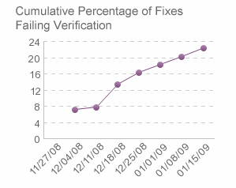

| Fixes Failing Verification |
|
Основное описание
PurposeThis metric shows the percentage of defects that failed the verification and need to be re-fixed. Usually after a defect is fixed, the fixed defect should be verified. This metric indicates the quality of the fix and the quality of the code that is being fixed. DefinitionPercentage Fixes Failing Verification = (Number of defects that failed the verification / Total number of defects that been fixed) * 100
The following chart shows an example of the fixes failing verification report.  Collection and reporting toolsIBM® Rational® Insight® reports on this metric. |
Licensed Materials - Property of IBM |